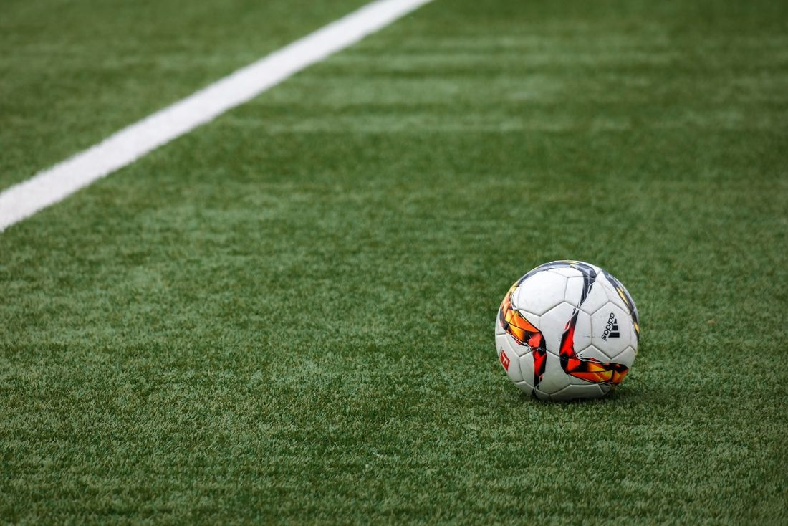
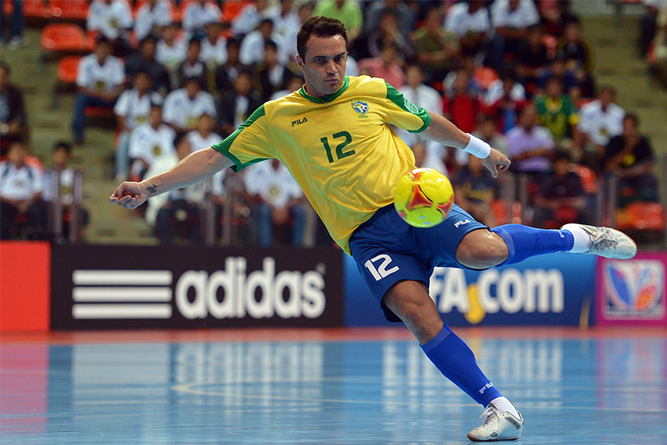
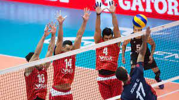
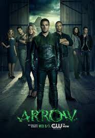
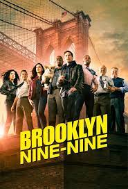

<!DOCTYPE html>
<html lang="pt-br">
<head>
    <meta charset="UTF-8">
    <meta name="viewport" content="width=device-width, initial-scale=1.0">
    <title>Artigos</title>
</head>
<body>
    
</body>
<script src="../script/script.js"></script>
</html><!DOCTYPE html>
<html>

<head>
    <meta charset="UTF-8">
    <meta name="viewport" content="width=device-width, initial-scale=1.0">
    <title>Top 5 músicas favoritas</title>
    <link rel="stylesheet" href="../css/stylepages.css">
    <link rel="stylesheet" href="../css/style.css">
</head>

<body>
    <!-- HEADER -->
    <header class="card">
        <nav class="nav-items">
            <a class="button to-left padding-large" href="../../index.html#inicio">INICIO</a>
            <a class="button to-right padding-large" href="../../index.html#contato">CONTATO</a>
            <a class="button to-right padding-large" href="../../index.html#projetos">PROJETOS</a>
            <a class="button to-right padding-large" href="../../index.html#artigos">ARTIGOS</a>
            <a class="button to-right padding-large" href="../../index.html#sobre">SOBRE</a>
        </nav>
    </header>
    <div class="content-group">


        <div class="left-side-bar card">
            <button class="linkToArticle" onclick="openContent(event, 'Article1')">Article1</button>
            <button class="linkToArticle" onclick="openContent(event, 'Article2')">Article2</button>
        </div>
        <div class="articles">
            <section id="Article1" class="article-content card, cardBox">
                <h2>Meus esportes preferidos</h2>

               
                <p><strong>FUTEBOL</strong></p>
                <p>Futebol é um esporte disputado entre duas equipes, cada uma com 11 jogadores,
                     que utilizam os pés e a cabeça para movimentar a bola em direção
                      ao campo adversário, com o objetivo de colocá-la dentro do gol 
                      ou meta. A partida divide-se em dois tempos de 45 minutos,
                       com um intervalo de 15 minutos.</p>
           
            

            <hr>

            <p><strong>FUTSAL</strong></p>
            <p>O futsal é um esporte derivado do futebol,
                 em que duas equipes de cinco jogadores possuem o objetivo de 
                 marcar gols. O futsal é um esporte praticado em quadra com cinco
                  jogadores em cada time. Na modalidade, também chamada de futebol 
                  de salão, as equipes têm o objetivo de marcar gols na baliza dos 
                  oponentes.</p>
       
        
            
                <hr>

                <p><strong>VÔLEI</strong></p>
                <p>O vôlei, também chamado de volley ou voleibol, é um esporte
                     de origem norte-americana do século XIX. É um esporte
                      de popularidade significativa em grande parte do mundo,
                       e está presente em muitos torneios e eventos esportivos
                        de âmbito internacionais, tais como os Jogos Olímpicos 
                        e os Jogos Panamericanos.</p>
            
            

          
            </section>

            <section id="Article2" class="article-content card,  cardBox">
                <h2>Minhas séries preferidas</h2>

                <p><strong>YOU</strong></p>
        <p>A primeira temporada de You, uma série da NETFLIX conta a história de
            Joe Goldberg, um homem que acaba se apaixonando
              por uma aspirante a escritora. Como forma de tentar se
              aproximar, ele pesquisa as redes sociais dela para descobir seus gostos.
            Joe vai ficando cada vez mais obcecado e é capaz de fazer de tudo para
            afastar quem atrapalha seus planos.
        </p>
      

      <hr>

        <p><strong>ARROW</strong></p>
        <p>Inspirada nos quadrinhos do Arqueiro Verde, esta série acompanha as
             aventuras do playboy chamado Oliver Queen que se torna super-herói 
             e luta contra vilões armado apenas com arco e flechas.</p>
    

      <hr>

      <p><strong>BROOKLYN NINE-NINE</strong></p>
      <p>
          Brooklyn nine-nine conta a história de um detetive chamado
          Jake Peralta. Desde que um novo capitão assume o comando do esquadrão
          ele precisa aprender a seguir as regras e trabalhar em equipe.
      </p>
    </p>
  

            </section>
        </div>
    </div>


    <footer class="center">
        <p id="pf">By Cauã Lucas Cruz da Costa</p>    
        </footer>
       
    <script src="../../script/script.js"></script>
</body>

</html>